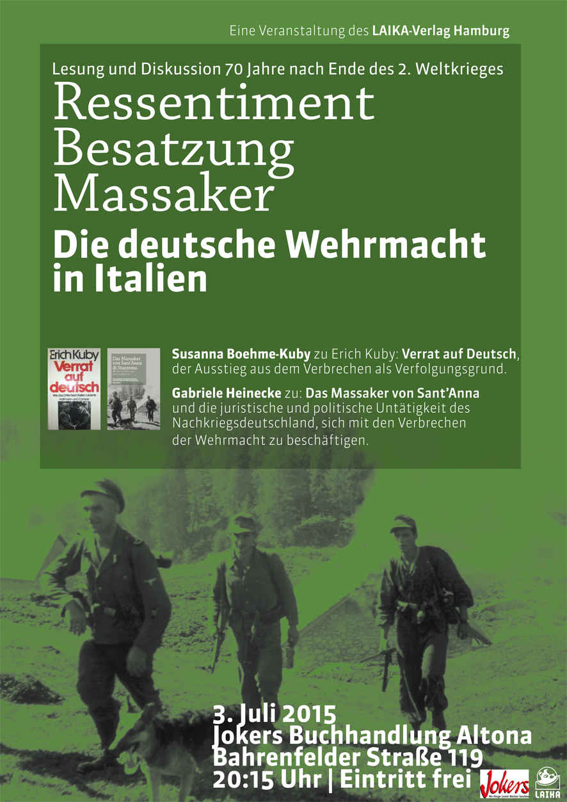

AK-Distomo
Start
|
Bremen, 7. November 2015
Möllner Rede im Exil
Die Möllner Rede im Exil wurde dieses Jahr von Argyris Sfountouris gehalten, der das SS-Massaker im griechischen Distomo
am 10. Juni 1944 überlebt hat. Er war dreieinhalb Jahre alt, als seine Eltern und dreißig seiner Familienangehörigen
ermordet wurden. Als NS-Verfolgter kämpft er bis heute um Anerkennung und Entschädigung und versucht
seine Geschichte durch juristische und politische Arbeit vor dem Vergessen zu bewahren. Seiner
Meinung nach "muss sich die deutsche Politik mit den Opfern als Menschen beschäftigen. Wir sind kein Abstraktum."
Die Möllner Rede ist eine kritische Bestandsaufnahme zum gesellschaftlichen Rassismus, Neonazismus und Umgang
mit Gedenken. Es gibt sie seit 2009. Seit 2013 wird sie im Exil gehalten, weil sie von offizieller Seite "nicht mehr am Jahrestag
als Bestandteil des offiziellen Programms durchgeführt werden soll." Die Möllner Rede im Exil zeigt, wie umkämpft Erinnern ist
und warum es immer wieder darum geht, das Erinnern zu erkämpfen.
Ibrahim Arslan, Überlebender des rassistischen Brandanschlags von Mölln 1992, sagt dazu: "Ich bin der Meinung, dass auch im
Exil gute Reden gehalten werden können." Deswegen wählen wir in anderen Städten einen angemessenen Veranstaltungsort,
denn Mölln ist überall.
Weitere Informationen zu dem Gedenken Mölln 1992 befinden sich hier
Die Rede von Argyris Sfountouris kann
hier (pdf) gelesen und
hier (freie-radios.net) gehört werden.
|
Oktober 2015
Griechenland im Würgegriff
mit einem Beitrag des AK Distomo
Der Fall Distomo
Die verweigerte Entschädigung für ein NS-Verbrechen
Im ISP Verlag ist das Buch Griechenland im Würgegriff
in einer dritten, aktualisierten und erweiterten Auflage mit einem Beitrag des AK Distomo erschienen.
Der Fall Distomo
Die verweigerte Entschädigung für ein NS-Verbrechen
Von Martin Klingner und Jan Krüger
Der Fall Distomo ist ein exemplarisches Beispiel für den Umgang der Bundesrepublik
Deutschland mit einem NS-Verbrechen. Hieran zeigen sich alle Momente deutscher "Vergangenheitsbewältigung":
Verschweigen, Leugnen und aktiver Täterschutz bis in die 1970er Jahre durch die Bundesrepublik
Deutschland. In den 1990er Jahren dann die scheinbare Umkehr: Deutsche Botschaftsvertreter_innen
erscheinen auf Gedenkfeiern und legen Kränze nieder. Notwendige Konsequenzen werden aber
nicht gezogen, im Gegenteil: Der Mord an 218 Menschen ist bis heute ungesühnt geblieben, die Täter wurden
von den deutschen Ermittlungsbehörden nicht verfolgt und bestraft, die Opfer und Hinterbliebenen
der Ermordeten nicht entschädigt.
Keine Bundesregierung reagierte jemals mit Reue und Demut auf die Tatsache,
dass die Überlebenden jahrzehntelang mit dem Schmerz und den materiellen
Verlusten allein gelassen wurden. Im Gegenteil: Sämtliche deutsche Regierungen haben es sich zur
Aufgabe gemacht, die berechtigten Entschädigungsforderungen der Opfer und Überlebenden mit
allen politischen und juristischen Mitteln zu bekämpfen. Mithilfe des Internationalen Gerichtshofs
in Den Haag gelang es der Bundesregierung sogar zeitweilig, selbst rechtskräftig
festgestellte Ansprüche der Betroffenen wieder zunichte zu machen.
Der komplette Beitrag (pdf)
|
Veranstaltung:
Griechenland unter dem Diktat des 3. Memorandums
Ort: Ex-HWP, Von-Melle-Park 9, Raum S29
Zeit: 27.10.2015, 19:00 Uhr
Veranstalter: Solidaritätsgruppe Griechenland
Die zerstörerischen Auswirkungen erfordern unsere Solidarität mit der griechischen Bevölkerung!
In der Veranstaltung wird über die Folgen des dritten Memorandums für die griechische Gesellschaft
referiert und diskutiert. Es wird auch über die neuesten Entwicklungen im sozialen Bereich und über die
solidarischen Bewegungen in Griechenland berichtet.
Referentinnen:
Angela Müller (Solidaritätsgruppe Griechenland),
Kalliopi Brandstäter (Förder- und Freundeskreis der Solidaritätsklinik Elliniko) und
Paraskevi Grekopoulou (Solidaritätsgruppe Griechenland)
Weiter Informationen befinden sich hier
|
Kein Schlußstrich in Griechenland
Eindrücke aus Athen und Distomo und der aktuelle Stand zu den griechischen Entschädigungsforderungen
gegenüber Deutschland
Ein Artikel für das Antifaschistische Infoblatt (Nr. 105, Herbst 2015)
antifainfoblatt.de
Jan Krüger, AK-Distomo
218 Namen werden am 10. Juni 2015 in der Gedenkstätte in Distomo verlesen. Es sind die Namen der
ermordeten Bewohner_innen des Ortes Distomo, der am 10. Juni 1944 von einer deutschen SS-Einheit
im Rahmen der "Partisanenbekämpfung" überfallen wurde. Das Massaker gilt als eines der schlimmsten
Verbrechen des II. Weltkriegs. Die Trauer der Menschen ist spürbar, kaum jemand lebt in Distomo, der oder
die keine Angehörigen verloren hat. Jeder Jahrestag wird mit mehrtägigen Feierlichkeiten begangen. Konzerte,
Theateraufführungen, politische Veranstaltungen und kirchliche Zeremonien. Am Jahrestag findet die eigentliche
Gedenkfeier statt. Nach einem Gottesdienst führt eine Prozession, angeführt von einer Militärkapelle und
Fahnenträgern, zu der nahe gelegenen Gedenkstätte, die sich auf einem Hügel am Rande des Ortes befindet. Dieses
Jahr nehmen u.a. der griechische Staatspräsident Prokopis Pavlopoulos und die Parlamentspräsidentin
Zoe Konstantopoulou teil.
Seit vielen Jahren besucht der AK Distomo die Gedenkfeier und unterstützt die Entschädigungsforderungen der
Opfer und deren Hinterbliebenen. Zudem besuchen wir im Rahmen der Reise Opferverbände, politische Initiativen,
antifaschistische Gruppen und Juristen_innen in Athen, mit denen wir im solidarischen Austausch stehen.
Mehr...
|
Interview vom 04. September 2015
Zieht Deutschland wieder nach Den Haag?
Neuer Stand im Entschädigungsstreit wegen NS-Massaker in Distomo
Ein Gespräch mit Martin Klingner
Mit immer neuen Tricks versucht sich die Bundesrepublik als Rechtsnachfolgerin des Deutschen
Reiches um Entschädigungsverpflichtungen zu drücken, die aus den Massakern von SS und Wehrmacht
an der Zivilbevölkerung in Ländern wie Italien, Griechenland oder dem ehemaligen Jugoslawien entstanden
sind. Bis vor den Europäischen Gerichtshof in Den Haag zog die deutsche Bundesregierung und
erhielt dort Recht: "Staatenimmunität" zog der IGH den Menschenrechten der Opfer vor. Das
italienische Verfassungsgericht sah das allerdings in einem Urteil aus dem letzten Jahr anders, daher
könnten in Italien weiterhin Entschädigungsurteile vollstreckt werden. Eine praktische Möglichkeit dazu
sind Pfändungen deutschen Eigentums in Italien. Diese Chance wollen auch KlägerInnen aus dem griechischen
Distomo. Doch die Bundesregierung ersinnt diverse Ausreden, warum die Pfändungen nicht möglich sein
sollen, und will nun allem Anschein nach auch erneut vor den IGH ziehen.
Martin Klingner vom AK Distomo gab uns einen Überblick über den aktuellen Stand der Auseinandersetzungen
um die Entschädigungen. Außerdem sprachen wir mit ihm über den Schadenersatz auf zwischenstaatlicher
Ebene, über die Reparationen, die Deutschland Griechenland noch schuldet - ein Thema, das wieder in
der Versenkung verschwunden ist.
Das Radiointerview ist unter dem folgenden Link zu finden:
radio dreyeckland
|
Reisebericht Athen und Distomo 2015
AK-Distomo
Der AK-Distomo aus Hamburg nahm auch dieses Jahr am Gedenken zur Erinnerung an das Massaker
vom 10. Juni 1944 teil. An diesem Tag überfiel eine Einheit der SS das griechische Dorf
Distomo und ermordete 218 Bewohnerinnen und Bewohner. Die Täter wurden nie bestraft. Die Opfer und
ihre Angehörigen erhielten von dem deutschen Staat keine Entschädigung.
Rund um die Gedenkfeierlichkeiten hat der AK Distomo vom 3.-12.6.2015 befreundete Jurist_Innen,
Genoss_Innen und Freund_innen in Athen und Distomo besucht und in diesem Rahmen verschiedene Veranstaltungen
organisiert oder daran teilgenommen.
Der komplette Reisebericht (pdf)
|
Freitag, 14.08.2015 um 20Uhr, Hafenvokü, Hafenstraße 116 (Hamburg)
Eintritt frei, Spenden erwünscht!
Filmclub Moderne Zeiten zeigt: Ein Lied für Argyris
Der sehr sehenswerte Film "Ein Lied für Argyris" wird am Freitag, den
14. August, um 20:00 Uhr in der Hafenvokü (Hafenstraße 116, Hamburg) gezeigt.
Der Film schildert das Leben von Argyris Sfountouri, der als Kind das Massaker
von Distomo am 10. Juni 1944 überlebte. Seine Eltern und 30 Familienangehörige
wurden von den deutschen Soldaten ermordet. Seit den 1990er Jahren führt er
den Kampf um Entschädigung. In unzähligen Referaten und Veranstaltungen versucht
er bis heute das Andenken an die Opfer zu bewahren, Deutschland zu seiner
Verantwortung zu zwingen und Entschädigungen zu erkämpfen.
Weitere Informationen zu dem Film unter
Ein Lied für Argyris
Im April wurde Argyris Sfountouri von Premierminister Alexis Tsipras und
Staatspräsident Prokopis Pavlopoulos eingeladen.
Anbei die Links:
www.iefimerida.gr
greece.greekreporter.com
www.demotix.com
(wir "Krauts" ohne Kenntnisse der griechischen Sprache können leider nur die Bilder ansehen - aber die sind wirklich gut!)
|
23. Juli 2015
Zum Stand der Zwangsvollstreckung in Italien
Der Fall Distomo
Bei unseren letzten Reise nach Athen und Distomo haben viele den Wunsch geäußert, dass
wir noch einmal zusammenfassen, wie die Rechtslage im "Fall Distomo" derzeit
aussieht. Der juristische Streit dauert ja seit 20 Jahren an.
Ausgangspunkt ist das Urteil des Landgerichts Levadia vom 30.10.1997, mit dem die
Bundesrepublik Deutschland zur Zahlung von umgerechnet ca. € 28 Mio. Schmerzensgeld
an die Klägerinnen und Kläger aus Distomo verurteilt worden ist. Dieses Urteil wurde
vom Areopag mit Urteil vom 4.5.2000 bestätigt. Es ist rechtskräftig und damit vollstreckbar.
Wesentliches Argument der Bundesrepublik Deutschland war in dem Rechtsstreit der Einwand
der Staatenimmunität. Konkret bedeutet das, dass die Opfer der NS-Massaker in ihrem Land,
in dem das Verbrechen begangen wurde, nicht gegen Deutschland klagen dürfen. Diesen
Einwand wies der Areopag zurück, weil er nicht für Verbrechen gegen die Menschheit gelte.
Mehr...
|
Schreiben des Zug der Erinnerung e.V. und der Jüdischen Gemeinde von Thessaloniki
Die Verantwortung der Deutschen Bahn, den jüdischen Opfern von Thessaloniki 89 Millionen Euro zurückzuerstatten
In einem gemeinsamen Schreiben haben sich die deutsche Bürgerinitiative "Zug der Erinnerung" und die
Jüdische Gemeinde von Thessaloniki an den Vorstand der Deutschen Bahn AG (DB AG) gewandt. Die DB AG
wird aufgefordert, sämtliche Einnahmen aus den antisemitischen Massendeportationen im besetzten Griechenland
"vollständig zu kompensieren", da die DB AG historische Erbin der NS-Reichsbahn ist.
Die NS-Reichsbahn verschleppte 1943 über 58.000 griechische Juden in die Vernichtungslager Auschwitz
und Treblinka, darunter mindestens 12.000 Kinder und Jugendliche. Die Opfer wurden dem sofortigen
Tod in den Gaskammern ausgeliefert; nur wenige überlebten.
Für die Todesfahrten stellte die Reichsbahn mindestens 570 Güterwagen bereit, um die jüdischen Einwohner
von Thessaloniki den Massenmorden zuzuführen. Weitere kriminelle Transporte galten den jüdischen
Gemeinden von Kreta, Korfu, Rhodos und Ioannina.
Ihre Mordbeihilfe ließ sich die Reichsbahn bezahlen. Das staatseigene Unternehmen nahm von
den Opfern und deren Vertretungskörperschaften mindestens 2,3 Millionen Reichsmark ein, heißt es
in dem gemeinsamen Schreiben an den DB-Vorstandsvorsitzenden Rüdiger Grube.
Dies entspräche nach heutiger Kaufkraft und einschließlich der seit 1943 aufgelaufenen Zinsen in Höhe
von 2,5% einem kumulierten Gesamtbetrag von 89.455.280.- Euro (Neunundachtzig Millionen
vierhundertfünfundfünzigtausend und zweihundertundachtzig Euro). Er müsse der Jüdischen
Gemeinde von Thessaloniki, der rechtmäßigen Vertretung der Ermordeten, vollständig und ohne Umwege zurückgezahlt
werden.
Der AK-Distomo unterstützt diese Forderung. Bitte zeichnet den Appell an die Deutsche Bahn AG,
deren Eigentümerin Deutschland ist.
Er findet sich auf folgender Website:
http://www.zug-der-erinnerung.eu/
Weitere Informationen findet ihr ebenfalls auf dieser Seite.
Das Schreiben des Zug der Erinnerung e.V. und der Jüdischen Gemeinde von Thessaloniki befindet sich
hier.
Hamburg, 5.7.2015
AK-Distomo
|
Ressentiments, Besatzung, Massaker
Die deutsche Wehrmacht in Italien
03. Juli 2015, 20:15 Uhr
Jokers Buchhandlung Altona, Bahrenfelder Strasse 119, Hamburg

Weitere Details zu dem Programm befinden sich
hier
|
Ungesühnt, aber Unvergessen - Deutsche Verbrechen in Griechenland und die Frage der Reparationen
29. Juni 2015 16:00 Uhr bis 20:30 Uhr
Pfefferberg, Schönhauser Allee 176, 10119 Berlin
Ist die Reparationsfrage erledigt?
Dürfen Nazi-Opfer auch nach 70 Jahren noch Wiedergutmachung verlangen?
Darf Deutschland die Zwangsanleihe behalten?
Auch 70 Jahre nach Kriegsende verweigert Deutschland Griechenland Entschädigung für Kriegsverbrechen
und die Ausplünderung des Landes unter deutscher Besatzung. Dabei hat es, auch nach Eingeständnis
der Bundesregierung, nie Reparationen gegeben für zerstörte Industrieanlagen und Infrastruktur,
keine Wiedergutmachung für die Opfer der zahllosen Massaker, welche die Wehrmacht, SS und
deutsche Polizeieinheiten verübt haben. Auch die Rückzahlung einer Besatzungsanleihe, die
Griechenland 1942 auferlegt wurde, wird von der Bundesrepublik weiterhin verweigert. Die
Behauptung der Bundesregierung, die Reparationsfrage sei schon längst »erledigt«, ist umstritten.
Eine einfache »Schlussstrich«-Erklärung kann nicht das letzte Wort sein. Zahlreiche ExpertInnen
betonen, die deutschen Kriegsschulden seien nicht verjährt, sondern in internationalen Abkommen
nur gestundet worden. Unsere Konferenz hat das Ziel, die moralische, politische und auch
juristische Dimension der Entschädigungsthematik zu beleuchten. Wir versammeln dazu Vertreterinnen
und Vertreter von NS-Opfern, der griechischen Regierung, der Syriza-Fraktion, außerparlamentarisch
Aktive aus beiden Ländern, HistorikerInnen und VölkerrechtlerInnen. Entschädigung ist ein unverzichtbarer
Bestandteil einer ehrlichen Aufarbeitung der Geschichte – das kann nur gemeinsam gelingen. Wir wollen
nach Wegen suchen, hierfür auch in Deutschland Mehrheiten zu gewinnen.
Weitere Details zu dem Programm befinden sich
hier
|
Veranstaltung mit Ioannis Stathas (SYRIZA, Mitglied des griechischen Parlaments)
und Gabriele Heinecke (AK Distomo)
25. Juni 2015 um 19 Uhr im Barmbek Basch
Wohldorferstr. 30, 22081 Hamburg / U Dehnhaide
Nachdem die neue griechische Regierung die Frage der Kriegsentschädigungen wieder auf die
Tagesordnung gesetzt hat, sind in der hiesigen Presse vermehrt Meldungen über die angeblich
"faulen" und "gierigen" Griechen zu finden. Diese Hetze soll ablenken:
70 Jahre nach Beendigung des Zweiten Weltkriegs und der Befreiung vom Faschismus sind die
Verheerungen, die die Truppen des faschistischen Deutschen Reichs während der vierjährigen Besatzung
Griechenlands angerichtet haben, immer noch ungesühnt. Im Interesse des deutschen Kapitals
wurden damals in riesigem Ausmaß Rohstoffe und Industrieanlagen geraubt und dem griechischen
Staat eine Zwangsanleihe abgepresst. Die direkte Folge war eine schwere Hungernot im
Herbst und Winter 1941 /42 bei der fast eine halbe Millionen Menschen starben. Darüber
hinaus wurden von deutschen Faschisten in ganz Griechenland Massaker an der Zivilbevölkerung
verübt, so etwa 1944 in dem Ort Distomo. Für diese Verbrechen wurden vom Rechtsnachfolger des
Deutschen Reichs und den Konzernen, die damals von den Raubzügen profitierten, nie
Entschädigungen geleistet. Die griechischen Regierungen haben sich immer wieder für die
Begleichung der deutschen Reparationsschulden eingesetzt – aber weitgehend erfolglos. Von einer
griechischen Kommission wurden die bestehenden Schulden im April auf 278 Mrd. Euro beziffert.
Der vollstänige Aufruf befindet sich hier:
Aufruf (pdf)
|
Pressemitteilung vom 02. Juni 2015
AK Distomo zum 71. Jahrestag des Massakers von Distomo
am 10. Juni 2015
Nazi-Deutschland hat in zwölf Jahren mehr Unheil angerichtet, als es in 70 Jahren hätte
wieder gutmachen können. Nur ein verschwindend geringer Bruchteil der im Pariser Reparationsabkommen
von 1946 festgelegten Zahlungen ist an die während des Zweiten Weltkrieges überfallenen Länder
geleistet worden. Der Bundesrepublik Deutschland als Rechtsnachfolgerin des faschistischen
Deutschen Reichs fehlt(e) zur Zahlung schon der Wille. Bundesaußenminister Steinmeier hat im
April 2015 die Debatte über Reparationen für "politisch gefährlich" und
Entschädigungsansprüche für erledigt erklärt. Politisch eine schäbige Haltung, mit der
sich Deutschland aus der Verantwortung für seine Geschichte stehlen will
und (völker)rechtlich ein unhaltbarer Standpunkt.
Der AK Distomo wird an den Gedenkfeierlichkeiten zum 71. Jahrestag des Massakers von
Distomo teilnehmen. Am 10. Juni 1944 wurden 218 Dorfbewohner von einer SS-Polizeieinheit
regelrecht abgeschlachtet. Eine strafrechtliche Verfolgung der Mordaktion gab es nie.
Die Entschädigungssumme von umgerechnet 28 Millionen Euro, die seit dem Urteil
des höchsten griechischen Gerichts, dem Areopag aus dem Jahre 2000 rechtskräftig ist, ist
bis zum heutigen Tage von der Bundesrepublik Deutschland nicht gezahlt worden. Der
AK Distomo fordert die sofortige Zahlung an die Überlebenden und Angehörigen des
Massakers von Distomo sowie die Entschädigung aller Opfer des Nationalsozialismus.
In der Zeit vom 3. bis 12. Juni 2015 wird der AK Distomo gemeinsam mit dem "Nationalrat
für die Entschädigungsforderungen Griechenlands gegenüber Deutschland" und
weiteren Organisationen in Athen und Distomo mit folgenden öffentlichen Aktivitäten präsent sein:
Freitag, den 5. Juni 2015, 11 Uhr in Athen:
Demonstration vom Syntagmaplatz zur deutschen Botschaft
Für die Entschädigung aller griechischen NS-Opfer
Samstag, den 6. Juni 2015, 11.00 Uhr in Athen:
Aktion mit Flugblattverteilung vor der Akropolis
Samstag, den 6. Juni 2015, 18.30 Uhr in Perama:
Infoveranstaltung und Teilnahme am Fest der Solidarität in Perama – Soziales Zentrum
Sonntag, den 7.6.2015, 12.00 Uhr in Athen
Buchvorstellung von Argyris Sfountouris
Montag, den 8. Juni 2015, 19.00 Uhr in Distomo/Museum
Veranstaltung des AK Distomo mit Berichten zum Stand der Vollstreckung
in Italien durch Dr. Joachim Lau sowie Berichten über die Aktivitäten
des AK Distomo in der Bundesrepublik Deutschland
Mittwoch, den 10. Juni 2015 in Distomo:
Teilnahme an den Gedenkfeierlichkeiten zum Jahrestag des Massakers
Donnerstag, den 11. Juni 2015
Pressekonferenz des AK Distomo und des Nationalrates für die
Entschädigungsforderungen Griechenlands gegenüber Deutschland
(Ort und Zeit werden noch bekannt gegeben)
Der AK Distomo fordert:
Sofortige Entschädigung aller Opfer des Nationalsozialismus!
Nazi-Verbrechen nicht vergeben, den antifaschistischen Widerstand nicht vergessen!
Gemeinsamer Kampf gegen den wiedererstarkenden Faschismus in Europa!
AK-Distomo, Hamburg, den 02. Juni 2015
Pressemitteilung deutsch (pdf)
Pressemitteilung griechisch (pdf)
Flugblatt englisch (pdf)
Flugblatt griechisch (pdf)
|
Zur Krise in Griechenland
Manolis Glezos in Hamburg
Samstag, 2. Mai 2015, 18.00 Uhr, Hamburger Rathaus, Festsaal
Veranstaltung der Fraktion Die Linke in der Hamburgischen Bürgerschaft
Am Sonnabend, den 2. Mai um 18.00 Uhr wird Manolis Glezos aus
Griechenland im Großen Saal des Hamburger Rathauses sprechen. Bei dieser
Veranstaltung werden die griechischen Ansprüche auf
Reparationsleistungen und auf Entschädigung für die Verbrechen der
Nazibesatzer ein zentrales Thema sein.
Manolis Glezos ist ehemaliger Widerstandskämpfer gegen die deutsche
Besatzung und Vorsitzender des griechischen Nationalrats für die
Entschädigungsforderungen gegenüber Deutschland.
Seit Gründung des AK-Distomo im Jahr 2001 sind wir ihm auf unseren
Reisen nach Griechenland immer wieder begegnet. Mit ihm und dem
Nationalrat gemeinsam haben wir uns dafür engagiert, dass Deutschland
endlich seine Schulden gegenüber Griechenland und gegenüber der
griechischen Bevölkerung bezahlt. Wir standen viele Male mit ihm
vor der Deutschen Botschaft in Athen und protestierten gegen
die erbärmliche Haltung Deutschlands in der Entschädigungsfrage.
Wir waren nicht immer einer Meinung, aber wir kämpfen für das gleiche
Ziel. Bei der Konferenz von Ano Viannos auf Kreta vom 13.-15.
September 2013 Gerechtigkeit und Entschädigung
verlieh er uns im Namen der Nationalrates und der Gemeinde Viannos eine Auszeichung
für unser Engagement.
Für uns geht es auf dieser Veranstaltung vor allem darum, sich gegen die
Haltung der Bundesregierung zu wenden, die sich in der Entschädigungsfrage
keinen Millimeter bewegt. Mit dieser Haltung bestätigt die deutsche
Regierung, dass sie nicht gewillt ist, die Konsequenzen aus den
Verbrechen Nazideutschlands zu ziehen. Leere Worte und Krokodilstränen
kommen von deutschen Staatsvertretern, aber den Opfern wird jede
Entschädigung vorenthalten. Mit Tricks und Erpressung entzieht Deutschland
sich der rechtlichen und moralischen Verpflichtung, Reparationen an
die überfallenen Länder und Entschädigung an die NS-Opfer zu zahlen.
Der AK-Distomo fordert weiterhin die Entschädigung aller NS-Opfer.
Ohne Entschädigung gibt es keine Gerechtigkeit.
Wir hoffen und wünschen uns, dass viele Menschen zu der Veranstaltung am
2. Mai kommen werden.
AK-Distomo
Manolis Glezos in Hamburg,
Veranstaltung der Fraktion Die Linke in der Hamburgischen Bürgerschaft (pdf)
|
Stopp G7 in Lübeck am 14./15. April in Lübeck
Deutschland ist der grösste Schuldner Europas!
Frank-Walter Steinmeier wird beim Treffen der Außenminister der "Gruppe der
Sieben" (G7) – der Staaten, die sich selbst die "sieben wichtigsten Industriestaaten"
nennen – deren Verantwortung für die Weltwirtschaft, die Sicherheitspolitik und den Weltfrieden
betonen. Tatsächlich wird mit gigantischem Aufgebot verschleiert, wer sich der (geschichtlichen) Verantwortung
entzieht. Es wird mit den Fingern auf Griechenland gezeigt. Dabei ist Deutschland der größte Schuldner in
Europa.
Nazi-Deutschland hat in zwölf Jahren mehr Unheil angerichtet, als es in 70 Jahren hätte wieder gutmachen können.
Nur ein verschwindend geringer Bruchteil der im Pariser Reparationsabkommen von 1946 festgelegten Zahlungen ist an
die während des Zweiten Weltkrieges überfallenen Länder geleistet worden. Der Bundesrepublik Deutschland als
Rechtsnachfolgerin des faschistischen Deutschen Reichs fehlt(e) zur Zahlung schon der Wille.
Bundesaußenminister Steinmeier nutzt aktuell die öffentliche Aufmerksamkeit, wenn er die Debatte
über Reparationen "politisch gefährlich" und Entschädigungsansprüche für erledigt hält.
Eine schäbige Haltung nach dem Grundsatz: Krokodilstränen – ja, aber das Geld bleibt hier!
Der vollständige Aufruf befindet sich hier:
Deutschland ist der grösste Schuldner Europas (pdf)
|
16. März 2015
Die deutsche(n) Schuld(en) und Griechenland:
Unwille zur Verantwortung
Ein Beitrag zur Klarheit in der gegenwärtigen Debatte über die griechischen Entschädigungsforderungen
Es ist paradox. Griechenland braucht Geld. Dabei hat es Guthaben. Das Guthaben liegt in Deutschland
und – als deutsches Staatseigentum im Ausland – in verschiedenen (europäischen) Ländern. Deutschland
schuldet Griechenland seit ca. 70 Jahren eine Summe, die heute auf bis zu 575 Milliarden EUR geschätzt
wird (so das Mitglied des französischen Sachverständigenrates für ökonomische Analysen,
Jacques Delpla, in Les Echos vom 23.06.2011) für:
1. Die Zahlung der auf der Pariser Reparationskonferenz von 1946 festgelegten Reparationen.
Die Bundesregierung behauptet, die Reparationen seien bereits im Rahmen eines "Globalabkommens" in
den 60er Jahren gezahlt worden. Im deutsch-griechischen Vertrag vom 18. März 1960 war vereinbart
worden, dass die Bundesrepublik Deutschland 115 Millionen DM "zugunsten der aus Gründen
der Rasse, des Glaubens oder der Weltanschauung von nationalsozialistischen Verfolgungsmaßnahmen
betroffenen Staatsangehörigen" an Griechenland zahlt. Diese Zahlung erfolgte für die
grausame Verfolgung der griechischen Juden. Allein in Thessaloniki starben ca. 50.000 Menschen
jüdischen Glaubens durch Mord und Deportation. Die Zahlung aus dem sog. "Globalabkommen"
hatte nichts mit den Verpflichtungen zur Reparationszahlung zu tun. Das ergibt sich schon aus
dem Wortlaut des Vertrages. Auf die 1946 bestimmte Reparationssumme wurde bis heute nichts gezahlt.
2. Die Rückzahlung der "Zwangsanleihe".
1942 wurde die Bank von Griechenland von den
NS-Besatzern gezwungen, ihre Devisenreserven als "Zwangsanleihe" abzugeben. Bei Kriegsende
betrug die Summe – nach Angaben des Auswärtigen Amtes des Deutschen Reiches aus April 1945 – 476
Millionen Reichsmark und sollte nach Beendigung des Krieges zurückgezahlt werden. Die Rückzahlung
der Zwangsanleihe ist keine Zahlung von Reparationen, sondern eines Darlehens. Gezahlt wurde nichts.
Mehr...
|
08. März 2015
Hagen Fleischer: Die Mär des Aly Baba
Hagen Fleischer ist Professor für neuere Geschichte an der Universität Athen. Der folgende Beitrag
ist die ungekürzte Replik auf eine Kolumne der Berliner Zeitung.
Eben erst erhielt ich Götz Alys Kolumne vom 23.2.2015, in der er erneut versucht alle griechischen
Ansprüche infolge der brutalen deutschen Okkupation 1941-44 mit höchst problematischen
Argumenten abzuschmettern. Zugleich attackiert er diesmal auch den Unterzeichneten, der
sich seit Jahrzehnten um historische Flurbereinigung zwischen seinen beiden Heimatländern müht.
Wenn Aly dabei dem Vertreter der Gegenposition "Verfälschung" vorwirft, macht er sich deren
selbst schuldig: So exkulpiert er etwa den von den deutschen Besatzern allmonatlich bei der
griechischen Zentralbank eingetriebenen Zwangskredit als griechische bzw. Fleischersche
Legende. Diese stütze sich, wie Aly zweimal behauptet, auf ein "einzelnes" Dokument: den in den
letzten Kriegsmonaten von NS-Experten ausgearbeiteten Schlussbericht, den ich vor
Jahrzehnten - damals noch unsigniert im Keller des Bundesarchivs - entdeckte.
Weiss Aly wirklich nicht, dass es zahllose Dokumente hoher NS-Stellen zum Kredit gibt,
zur "Anlastung des Reichs" und der regelmäßig nach Berlin gemeldeten (steigenden)
"Reichsverschuldung gegenüber Griechenland"?
Mehr...
|
04. Februar 2015
Joachim Lau: Offener Brief an Joachim Gauck
Sehr geehrter Herr Präsident Joachim GAUCK!
Die Frankfurter Allgemeine Zeitung berichtete vor einem Jahr (6.3.2014), daß Sie die Frage des griechischen
Staatspräsidenten Papoulias nach den deutschen Reparationen für die Zeit der Besatzung während
des Zweiten Weltkriegs mit den Worten zurückgewiesen hätten:"Sie wissen, dass ich darauf nur so
antworten kann, dass ich meine, der Rechtsweg dazu ist abgeschlossen."
Auch aus den jüngsten Äußerungen der Bundesregierung konnte ich entnehmen, daß in Deutschland
offiziell die Meinung vertreten wird, daß die Frage der Entschädigung für Kriegsschäden des
griechischen Staates und seiner Bevölkerung ebenso wie der italienischen Bevölkerung, an denen vielfache
Verbrechen begangen worden sind, angeblich wegen Verjährung und/oder anderweitiger Regelung schon erledigt sei.
Als Prozessvertreter der Bewohner von Distomo (Griechenland) und zahlreicher italienischer
Deportierter erlaube ich mir, dieser Ansicht zu widersprechen...
Der vollständige Brief befindet sich hier:
Offene Brief Joachim Lau (pdf)
|
Pressemitteilung des AK-Distomo vom 5. Februar 2015
Entschädigungsfrage zurück auf der politischen Agenda
Neue griechische Regierung lässt NS-Opfer hoffen
Kaum war der neue griechische Ministerpräsident Tsipras im Amt, legte dieser bereits den Finger in die Wunde.
Deutschland hat bis heute seine Schulden gegenüber Griechenland aus der Zeit der Besatzung von 1941 bis 1944
nicht bezahlt. Die derzeitige Kampagne deutscher Medien gegenüber der neuen griechischen Regierung stellt
eine Verdrehung der tatsächlichen Verhältnisse dar. Die Forderungen Griechenlands sind juristisch,
politisch und moralisch begründet.
Deutschland hat seine Reparationsverpflichtungen nicht erfüllt, es hat die "Zwangsanleihe" nicht
zurückgezahlt, die das Deutsche Reich der griechischen Staatskasse abgepresst hatte, um die Kosten der
Besatzung aufzubringen und auch große Teile des geraubten Kulturguts wurden nicht zurück gegeben.
Das sogenannte "Wirtschaftswunder" in der Bundesrepublik Deutschland wäre nicht möglich gewesen
ohne die Stundung der Kriegsschulden im Londoner Schuldenabkommen von 1953. Spätestens seit
dem 2+4 Vertrag von 1990 sind diese Schulden aber fällig. Die Zahlungsverweigerung Deutschlands
ist ein klarer Bruch internationaler Verträge.
Mehr...
|
Donnerstag, 12. Februar 2015
19.00 Uhr Gewerkschaftshaus, Besenbinderhof, Raum Marseille, 4. Stock
Eurydike Bersi
Griechenland nach der Wahl:
Merkel-Politik abgewählt – wie weiter?
Eurydike Bersi: Journalistin der Tageszeitung Kathimerini (Athen) &
Co-Regisseurin des Films "Wer rettet wen?"
Am 25. Januar wurde in Griechenland die Syriza, "Koalition der Radikalen Linken", zur stärksten Partei
gewählt. Dennoch mußte sie eine Koalition mit der Partei "Unabhängigen Griechen" eingehen. Syriza stellt
mit Alexis Tsipras den Ministerpräsidenten. Er hatte vor den Wahlen erklärt, die Spardiktate der Troika beenden und mit
der für große Teile der griechische Bevölkerung katastrophalen Verelendungspolitik brechen zu wollen.
Gibt es dafür eine realistische Chance angesichts des Widerstandes der internationalen Gläubiger, allen voran die
deutsche Regierung? Die Mehrheit der arbeitenden Bevölkerung Griechenlands hat aber mit dem Wahlergebnis klargestellt, dass
sie die über sechs Jahre laufenden schmerzlichen Angriffe auf ihren Lebensstandard nicht länger tolerieren will. Wo
stehen die abhängig Beschäftigten und ihre Gewerkschaften in Deutschland in diesem Konflikt?
Tsipras hat als erste Amtshandlung einen Kranz an der Gedenkstätte für ermordete griechische Widerstandskämpfer gegen
die Nazibesatzung niedergelegt und damit einen deutlichen Bezug zum antifaschistischen Widerstand hergestellt. Hat die
Forderung nach der immer noch ausstehenden Entschädigung von griechischen NSOpfern mit der neuen Regierung eine größere
Chance auf Durchsetzung? Über diese (und andere) Fragen wollen wir diskutieren mit:
Eurydike Bersi, Journalistin der Tageszeitung Kathimerini, Athen, Co-Regisseurin des Films "Wer rettet wen?"
Der Aufruf befindet sich hier:
Aufruf (pdf)
|
Veranstaltung des Auschwitz-Komitee zum 70. Jahrestag
der Befreiung von Auschwitz
Treffen der Generationen
am Sonntag, 25. Januar 2015 von 10 - 18 Uhr
im FB Sozialökonomie, WiSo-Fakultät, Univ. HH, Von-Melle-Park 9, 20146 Hamburg (ehemalige HWP)
Auch nachdem fast ein Menschenleben vergangen ist, ist "Auschwitz" als Name und Symbol
der millionenfachen systematischen Ermordung der Juden, Sinti, Roma und vieler anderer durch das
nationalsozialistische Deutschland im heutigen Leben präsent. Nach so langer Zeit muss immer
noch darüber berichtet werden, was damals geschah und wie lange es dauerte bis die Verfolgten
nach der Befreiung gehört wurden. Ebenso sind bis heute noch Fragen der so genannten Entschädigung
und Wiedergutmachung offen. Und nach wie vor leben noch Täter unter uns, ohne dass sie zur
Verantwortung gezogen werden. Damit nicht genug, immer noch und wieder muss Aufklärung und
Information gegen die aktiven und aufkommenden Neofaschisten betrieben werden! Wir wollen es
vielen Besucher_innen ermöglichen, in neun Gesprächskreisen, mit denjenigen, die die Verfolgung
erlebt und überlebt haben ins Gespräch zu kommen, ebenso wie mit den Kindern und
Enkeln der Verfolgten und Ermordeten.
Teilnehmer_innen: Gerhard Baader, Rolf Becker, Esther Bejarano, Joram Bejarano, Alice Czyborra,
Sylvia Gingold, Swenja Granzow, Gabriele Heinecke, Ilse Jacob, Frieda Larsen,
Argyris Sfountouris, Ulla Suhling, Sandra Wachtel, Norma van der Walde, Arnold Weiß, Harry Weiß,
Inge Weiß, Marianne Wilke, Steffi Wittenberg, Kutlu Yurtseven,...
Veranstalter: Auschwitz-Komitee i. d. BRD e.V., VVN-BdA Hamburg, AK-Distomo, Landesverein der Sinti
in Hamburg e.V., KZ-Gedenkstätte Neuengamme; in Kooperation mit der Rosa Luxemburg Stiftung
Hamburg; mit Unterstützung durch den Fachschaftsrat FB Sozialökonomie
Der Aufruf des Auschwitz-Komitees befindet sich hier:
Aufruf (pdf)
|
|